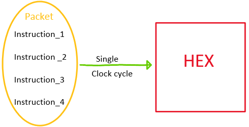
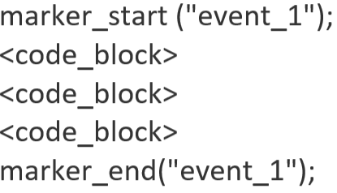
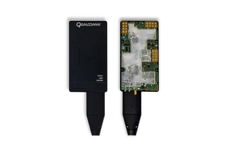
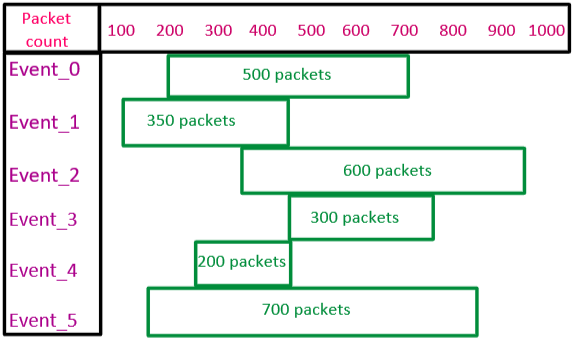
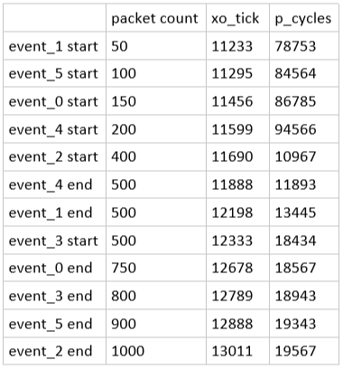

Software Engineering Intern
Worked with the 4G LTE team to build a code performance data collection API
- 
- 
The 4G LTE team required a tool to collect data regarding the number of instructions executed by certain blocks of code during a single run. Such a tool would help identify bottlenecks in the codebase. Unlike regular processors that execute one instruction per clock cycle, Qualcomm's Hexagon executes multiple instructions in one clock cycle. This set of instructions executed per clock cycle is called a Packet. A profiling API was built in C to collect data regarding packet count during code execution.
The packet count profiling API allowed a user to collect data regarding the number of packets executed by a certain block of code by placing start and end markers certain points in the codebase. To differentiate markers at one section of code from another, markers at each chunk of code were given specific event ids. The markers we're added to the code base before execution by the user in the form of function calls to the packet count profiling API. The profiler was made more versatile by giving it the ability to collect not just packet count data but also other performance related data such as timestamps, clock cycles, clock frequency etc.
Collected test profiling data logs by profiling code base run on mobile device-base station network
The profiling API was designed to dump the profiling data logs into timestamped files when running code with profiling markers. To test data log collection, the code was flashed onto a test mobile device connected to a base station. Data logs were collected from test run in the form of timestamped DLF (diagnostic log files). Jenkins was used for continuous integration and build automation while testing the profiler tool on the code base.
Parsed and effectively rendered profiling data logs in graphical and tabular format
- 
- 
The data log files collected were parsed and rendered using a DLL (dynamic-link library) executable written in C++. The DLL executable was run on QXDM which is a diagnostic client for rapid prototyping of data log packets. QXDM's graphical user interface was used to display transmitted data in graphical and tabular formats. The data was graphically rendered using a modified gannt chart that displayed stats regarding each event. A gannt charts usually show the dependency relationships between activities and current schedule status. The schedule status (x-axis) of the gannt chart represents the number of packets that have been executed by the Hexagon processor. The activities (y-axis) of the gannt chart represents name of the event that is monitoring a particular code block. Each bar of the gannt chart represents the packet count at the start and end point of its corresponding event.
The profiling data was also rendered in tabular format. The events were listed in the table in chronological order of occurrence. Each row of the table represented the start or end marker of an events monitoring various code blocks. Each column represented various attributes of an event marker. The columns presented data regarding packet count, clock cycles and clock frequency etc. of a particular event marker respectively.